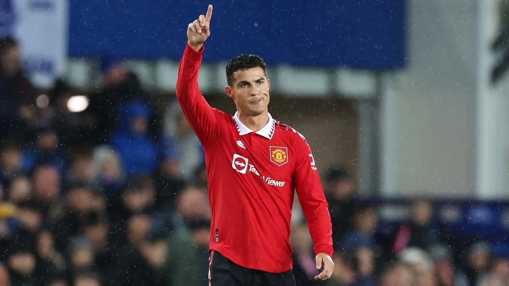

| Datos personales | CR7 |
|---|---|
| Nombre completo | Cristiano Ronaldo dos Santos Aveiro |
| Apodos | CR7, El Bicho, El Comandante, Míster Champions, D7OS, GOAT |
| Nacimiento | Funchal, Madeira, Portugal, 5 de febrero de 1985 (37 años) |
| Nacionalidad | Portuguesa |
| Estatura y peso | 1,87 m (6′ 2″), 83 kg (183 lb) |
| Deporte | Futbol |
| Dorsal | 7 |
| Goles | 700 (943 Pj) |
| Fecha Debut | 20 de agosto de 2003 |
Cristiano Ronaldo dos Santos Aveiro nació en São Pedro, Funchal, en la isla portuguesa de Madeira, y creció en la
área de Santo António, uno de los barrios más pobres de Portugal. Es el cuarto y más joven hijo del matrimonio entre
Maria Dolores dos Santos Viveiros (n. 1953), una cocinera, y José Dinis Aveiro (1954-2005), un jardinero municipal y utilero.
Su bisabuela paterna, Isabel da Piedade, era de la isla de São Vicente, Cabo Verde.
Tiene un hermano mayor, Hugo (n. 1975) y dos hermanas mayores, Elma (n. 1973) y Liliana Cátia "Katia" (n. 1977), quien es una
cantante. Su madre reveló que cuando estaba embarazada de él quería abortarlo, debido a la adicción al alcohol
que tenía su padre, la mala situación económica de la familia y porque ya tenía demasiados hijos. Sin embargo, su médico
se negó a realizar el procedimiento. Cristiano se crio en una familia católica y en un hogar de malas condiciones,
durmiendo en la misma habitación junto a todos sus hermanos.
